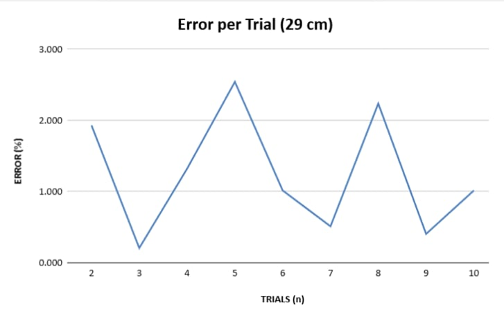

📈 Results Summary
Experimental evaluation of the 2.4 GHz FMCW-GPR system was conducted under controlled laboratory conditions. Two reference depths (29 cm and 72 cm) were analyzed using 10 repeated trials per depth (n = 10) to assess accuracy and repeatability.
29 cm Depth
1.433% Mean Error
72 cm Depth
0.863% Mean Error
Repeatability
Low trial-to-trial variance
📉 Percentage Error Analysis
The following line graphs illustrate the percentage error observed across 10 repeated trials for each reference depth.
29 cm Reference Depth
Higher variation due to surface coupling and near-field effects.
72 cm Reference Depth

Lower variance indicating stable beat-frequency extraction.
🧠 Discussion of Results
Reduced error at greater depth is attributed to improved signal stability and reduced surface coupling effects. Shallow measurements experience increased variability due to interface reflections and antenna positioning.
Application of STFT with windowing improved time–frequency localization, enabling consistent depth estimation across repeated trials.
🌍 Applications
Civil Engineering
Underground utility and structural inspection.
Disaster Response
Subsurface scanning in hazardous environments.
UGV Integration
Autonomous subsurface mapping platforms.
🔍 Scope of the Study
📡 System Focus
Development of a low-cost, portable 2.4 GHz ISM-band FMCW-GPR system integrated with a UGV for controlled subsurface detection.
🧮 Signal Processing
Application of STFT and Hamming windowing to improve SNR and generate interpretable radargram visualizations.
📐 Range Analysis
Theoretical range resolution evaluated using ΔR = c / 2B with an 83.5 MHz bandwidth.
🤖 Autonomous Scanning
UGV integration enables autonomous lateral scanning and reduces human exposure in hazardous environments.
🧪 Experimental Setup
Data collection performed on a wooden test platform with embedded metallic targets to simulate subsurface objects.
📊 Validation & Standards
Depth estimates validated via manual measurement, paired t-tests (α = 0.05), and benchmarked against ASTM D6087-08.
✅ Summary of Findings
✔ Successfully developed a compact, modular, and autonomous FMCW-GPR system suitable for controlled subsurface detection.
✔ Achieved mean absolute errors of 0.415 cm (29 cm depth) and 0.622 cm (72 cm depth) across repeated trials.
✔ STFT-based processing enabled clear radargram visualization during static and dynamic scanning.
✔ Effective noise mitigation achieved through delay lines, filtering, and mixer isolation.
✔ Continuous target signatures validated reliable dynamic operation.
🚀 Recommendations
💻 Software
- Auto-range function for beat frequency detection
- Horizontal STFT for improved spatial interpretation
- Automated system initialization sequence
- Robust peak detection algorithms for noisy signals
🔧 Hardware
- Higher power amplifier for deeper penetration
- Bowtie antenna for wider bandwidth and cleaner radiation pattern
- Improved RF filter matching
- Exploration of higher-frequency operation for shallow imaging